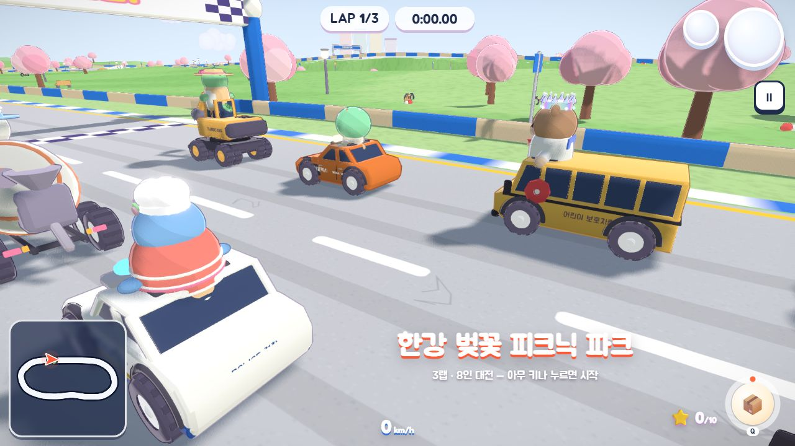

HELLO, HUMAN / LETTER 04
반복 업무 하나부터,
AI와 일하는 방식 바꾸기
상품정보 검수부터 서버 보안 점검까지.
AI에게 맡길 범위와 사람이 확인할 기준을 정해봅니다.
안녕하세요, 헬로우 휴먼 멤버 여러분. 네 번째 편지를 보냅니다.
두 문서를 나란히 놓고 다른 부분을 찾거나, 업데이트한 버전이 서버에서 실행 중인지 확인할 때가 있습니다. 익숙한 일이라도 작은 차이를 놓치기 쉽습니다. 이번 주에는 이런 반복 업무를 AI와 나누어 처리하는 방법을 모았습니다.
가상 자료로 연습하는 가이드부터 Shopify가 실패 사례를 다음 개선에 반영하는 과정까지, 내 업무에 적용할 만한 내용을 담았습니다. 10월 20일부터 26일까지의 새 기사 11편과 새 소식이 더해진 작업물 소개 2편을 만나보세요. 회원들이 만든 게임 이야기도 기다리고 있습니다.
어디서 시작할지 고민이라면
먼저 읽기 좋은 3편
어디가 다를까요?
두 자료를 비교해 검수표를 만드는 실습입니다. 요청문을 실행해 기대 답안과 비교하고, 기록지를 내 업무에 맞게 바꿔 쓸 수 있습니다.
AI 네이티브 실무 가이드 → 실패에서 개선점 찾기 · AI가 같은 실수를되풀이하지 않으려면
Shopify가 업무별 AI를 개선하는 과정에서 힌트를 얻습니다. 평가 기준을 세운 뒤, 지침·도구·자료 중 무엇부터 고칠지 짚어봅니다.
업무 전문 AI 인사이트 → 개발·운영에서 확인하기 · 업데이트한 버전이정말 실행 중일까요?
Node.js·Java·Tomcat의 보안 점검부터 재배포와 적용 확인까지 정리했습니다. 가상 자료로 AI가 작성한 점검 초안도 기대 결과와 비교해보세요.
서버 보안 패치 가이드 →AI가이드 · 2편
무엇을 맡기고, 어디까지 확인할지
AI가 답을 내놓으면 무엇부터 확인해야 할까요? 두 가이드에는 직접 연습할 자료와 결과를 판단할 기준을 함께 담았습니다.
AI 네이티브 실무 가이드, 반복 업무 하나부터 바꾸기 →
전종홍의 『AI 네이티브 핸드북 2026』을 바탕으로 개념을 풀고, 상품정보 검수에 적용해봅니다. 서로 다른 내용과 근거가 부족한 내용을 구분하도록 헬로우 휴먼이 가상 자료·요청문·평가표를 별도로 만들었습니다.
우리 서버, 보안 패치까지 끝났을까? →
설치한 버전이 실제 서비스에도 적용됐는지 확인하는 절차입니다. 환경 목록 작성부터 재배포·복구 준비와 완료 점검까지 따라갈 수 있습니다. GPT-6에 가상 자료를 넣어 얻은 점검 초안도 실었으며, 실제 서버에 패치를 적용한 실험은 아닙니다.
핸드북은 저자의 공개 저장소 ↗에서 읽을 수 있습니다. 보안 가이드의 공지·버전 정보는 10월 26일에 확인한 내용입니다. 실제 적용 전에는 해당 공식 공지를 다시 확인하세요.
커머스 인사이트 · 1편
실패한 이유에서 개선할 곳을 찾습니다
잘못된 답변을 모았다면, 이제 원인을 찾을 차례입니다. 평가 기준이 모호한지, 필요한 자료가 빠졌는지부터 따져봅니다.
커머스 AI, 반복 업무의 전문가로 키우기 →
Shopify는 Sidekick의 일부 업무를 전문 모델에 맡기고, 교정한 사례로 학습한 뒤 결과를 평가합니다. 글에서는 이 과정을 배송 문의에 적용해 자료 부족·도구 오류·모델의 실수를 구분하고, 사람이 수정하는 비용까지 고려하는 방법을 제안합니다.
Shopify의 제작기 ↗에 나온 성능·비용 수치는 특정 업무의 측정 결과입니다. 모든 업무의 품질이나 총비용 절감률로 일반화할 수는 없습니다. 배송 문의 도우미는 헬로우 휴먼의 적용 제안입니다.
AI뉴스 · 7편
일을 맡길 때, 접근 권한도 정했나요?
코드 전환과 신약 연구, 작은 판단의 자동화까지 AI의 활용 범위가 넓어지고 있습니다. 이번 주에는 AI가 어떤 자료에 접근하고 어디까지 실행해도 되는지 돌아보게 하는 소식도 이어졌습니다.
Claude가 찾은 유료 데이터, 접근 허락도 있었을까요? →
승인 없는 접근 보도와 Anthropic의 설명, 머스크가 밝힌 SpaceX의 GPU 구매 자금 소식을 정리했습니다. 이어지는 가상 실험에서는 조회비 100원 안에서 세 가게의 가격을 비교하며, 필요한 권한이 없거나 예산이 부족할 때 멈추는 방법을 다룹니다.
Kimi K3.1 Pro, 사이버 공격 능력을 낮춘 이유 →
Moonshot이 사이버 관련 학습 데이터를 제한했다고 밝힌 배경과 Microsoft가 분석한 AI 공격 사례를 다룹니다. 모델의 능력뿐 아니라 연결된 앱의 권한도 점검해야 하는 이유를 보여줍니다. 가중치는 기사 확인 당시 공개 예정 상태였습니다.
AI가 코드를 고치기 전에, 시스템부터 이해하려면 →
NTT의 시스템 분석, TanStack AI 1.0, OpenAI의 실행 격리와 영국 AISI의 행동 연구를 한자리에 모았습니다. Apache OFBiz의 주문 취소 코드를 기능 설명서와 근거 연결표로 정리한 사례도 볼 수 있습니다. 다만 코드 실행으로 동작을 검증하지는 않았습니다.
Decisions API, 작은 판단을 빠르게 처리하다 →
Decisions API는 정해진 선택지 안에서 분류·선택·점수화를 처리합니다. Agent Skills 표준의 관리 주체 변경, Uber의 전사 도입, METR의 과거 감시 체계 평가도 함께 전합니다.
Walmart, 쇼핑 에이전트별 구매 권한과 한도 도입 예고 →
Walmart의 구매 통제 계획, Claude Duet, Cohere의 검색 개선을 소개합니다. OpenAI의 클라우드 협력 소식과 내부 사고도 다루며, AI의 완료 보고가 실제 변경 내용과 일치하는지 확인할 필요를 짚습니다.
OpenAI, 신약 연구와 후속 업무를 잇는 Orchestra Bio 인수 →
인수 발표부터 Claude의 단백질 실험, Gemini의 소상공인 기능, AWS의 도구 탐색과 실행 통제까지 이어지는 소식입니다. 단백질 실험은 표적에 붙는지를 확인한 것으로, 치료 효과를 검증한 결과와는 구분해야 합니다.
COBOL을 새 언어로 옮겨도, 계산 결과는 같아야 합니다 →
OpenAI의 코드 전환 평가와 AWS·Deepgram의 실행 비용 개선, Modal의 CPU 시험 결과를 살펴봅니다. 미국 연방 민간기관의 DeepSeek 사용 제한이 어디까지 적용되는지도 정리했습니다.
속보·단신 · 1편
취약점을 찾은 다음, 고치고 배포하는 일까지
취약점 보고서가 쌓여도 고칠 여력이 부족하면 문제는 남습니다. 유지관리자의 대응을 돕는 프로그램 소식입니다.
OpenAI ‘Patch the Planet’, 보안 대응을 함께 준비하기 →
6월 출범한 이 프로그램은 오픈소스 개발팀에 보안 전문가와 AI 도구를 지원합니다. 이번에 공개된 PHP 대응 사례를 통해, 취약점을 검증하고 공개·패치 배포 일정을 조율하는 과정을 알아봅니다.
AI 사례연구 · 0편
이번 주 새 글 없음
10월 20~26일에는 새 사례연구가 없었습니다. 만드는 과정이 궁금하다면 아래 회원 작업물의 제작기를 읽어보세요.
작업물 소개 업데이트 · 2편
이번에는 브라우저에서 한 판
새로 추가된 게임 두 편과, 지난 호에서 만난 포자 대청소의 웹 공개 소식을 전합니다.

도시를 부수는 괴물과 트랙을 달리는 카트 →
최태준 회원의 작업물 소개에 10월 20일 RAMPAGE 2026, 21일 TURBO RALLY가 추가됐습니다. RAMPAGE는 원작을 분석해 만든 개인 웹 리메이크입니다. TURBO RALLY에서는 AI 카트 일곱 대와 레이스를 펼칩니다. 이 게임의 제작기에는 코드로 그래픽·음악을 만들고 AI 음성의 발음을 검수한 과정도 담겨 있습니다.
포자 대청소, 웹 테스트 버전으로 먼저 만나기 →
지난 호에서 소개한 조민하 회원의 퍼즐 게임 ‘포자 대청소’에 웹 플레이 링크와 실제 화면을 추가했습니다. 10월 20일 안내에 따르면, 제작자는 앱스토어 출시를 준비하며 웹 테스트 버전을 공개했습니다. 소개 글에서 퍼즐과 도시 복원이 이어지는 모습을 만나보세요.